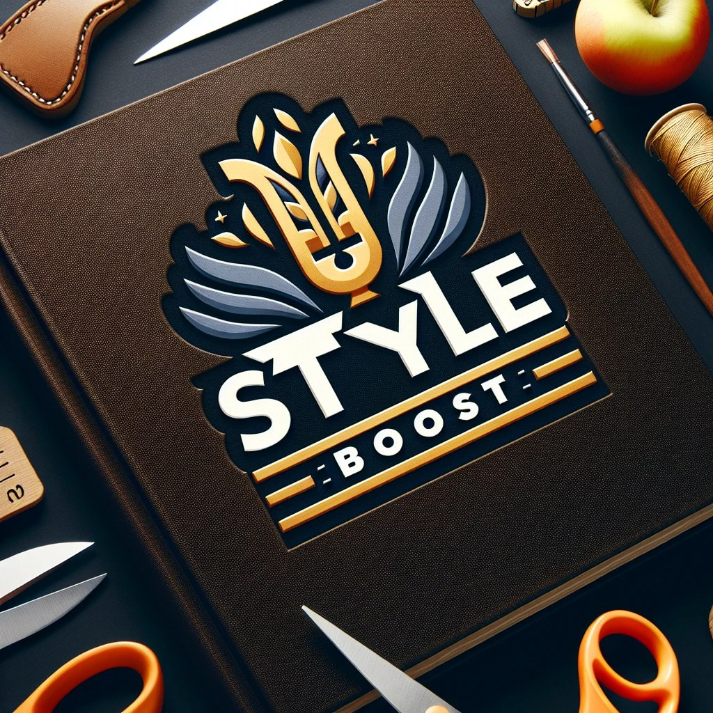

Bem-vindo ao StyleBoost, um kit CSS de front-end poderoso e flexível para o desenvolvimento de interfaces web. Com uma combinação de componentes reutilizáveis, utilitários e estilos predefinidos, o StyleBoost oferece uma maneira eficiente de criar designs atraentes e responsivos.
Para começar a usar o StyleBoost em seu projeto, você deve fazer o download do arquivo CSS do StyleBoost e incluí-lo localmente em seu projeto. Fazer download
O StyleBoost oferece uma variedade de classes utilitárias que podem ser aplicadas diretamente em seu HTML para estilizar elementos. Além disso, você pode utilizar os componentes predefinidos para agilizar o desenvolvimento de interfaces.
Por exemplo, para aplicar margem à esquerda em um elemento, você pode usar a classe .styleb-ml-4. Para adicionar um botão com estilo, você pode utilizar a classe .btns001.
O StyleBoost oferece uma variedade de componentes prontos para uso, como barra de navegação, cards, formulários e muito mais. Você pode consultar a pagina COMPONENTES para ver todos os componentes disponíveis.
Caso deseje personalizar o StyleBoost para atender às necessidades específicas do seu projeto, você pode modificar as classes CSS ou criar estilos adicionais para complementar o StyleBoost
O StyleBoost é um projeto de código aberto e estamos sempre abertos a contribuições da comunidade. Se você tiver sugestões, correções ou novas ideias, sinta-se à vontade para enviar um pull request em nosso repositório no GitHub.
Esperamos que o StyleBoost seja útil para o seu desenvolvimento web. Se tiver alguma dúvida ou precisar de suporte, não hesite em entrar em contato conosco.
Divirta-se criando com o StyleBoost! 🎨✨